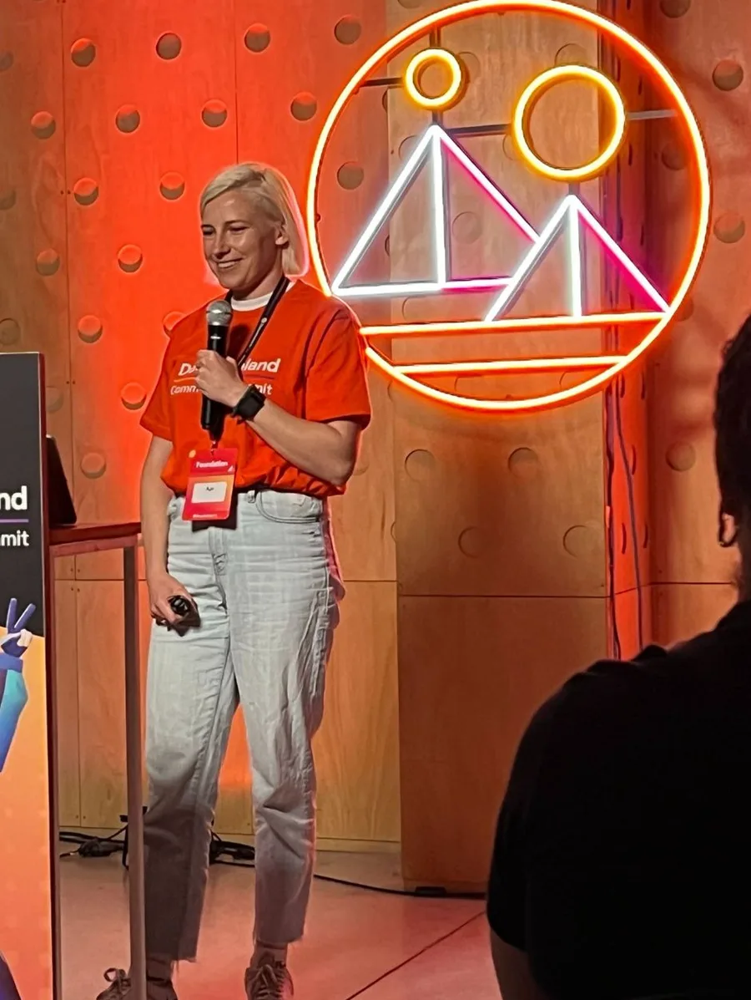
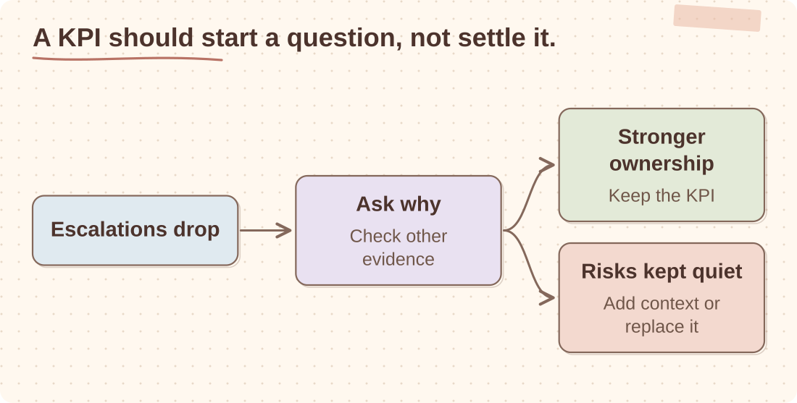

Start with the result
Shipping is important, but finishing a roadmap is not enough. I want to know what improved for users, creators or the business.
How I lead engineering teams
Earlier in my career, I sometimes mistook being involved in every important decision for being useful. That works for a small team. As the team grows, it becomes a bottleneck.
A large part of my job now is making sure people understand the problem, have enough context and know which decisions are theirs to make. I am direct about expectations and I would rather discuss a difficult trade-off early than discover it at the end of a project.

Shipping is important, but finishing a roadmap is not enough. I want to know what improved for users, creators or the business.
Unclear expectations rarely become clearer on their own. I try to name the problem and discuss the trade-off while there is still time to act.
I add a process when a recurring failure shows that we need one. A new meeting does not fix unclear ownership.
I stay involved in technical direction, but the people closest to the system should usually choose how to build it.
A proxy is an indirect measure we use when the outcome is slow or hard to see. It can be a useful KPI, but it is not the outcome. Fewer decisions escalated to a senior leader may mean stronger ownership. It may also mean people have stopped raising risks. The number tells me where to look; it does not tell me which explanation is true.

If people can improve the number without improving the result, the KPI needs more context or should be replaced.
Activity replacing progress
What actually changes if this works?
Watch for Busy teams, full roadmaps, many updates, unclear user or business change.
Control replacing trust
Am I reducing risk, or removing someone else's opportunity to think?
Watch for Important decisions keep returning upward because the system feels safer that way.
Process replacing clarity
Is this a process problem, an ownership problem or a clarity problem?
Watch for New meetings, templates or approval flows appear before the failure mode is named.
Frameworks replacing thinking
Is the framework creating better judgement, or just a new scoreboard?
Watch for The team optimises for the cycle, appetite, ticket, review or status update instead of the product outcome.
Implementation replacing leadership
Have I defined the outcome clearly enough for someone else to choose the method?
Watch for The technical detail gives faster feedback than coaching, alignment or hard prioritisation.
Status replacing evidence
What signal would change our mind?
Watch for The team reports movement, but no signal would change the decision.
One team I led had grown faster than its way of working. Too many decisions returned to the same senior people, managers lacked a clear remit and QA was often involved late. I had contributed to that dependency by staying too close to too many decisions.
We clarified ownership, gave managers and QA leads more authority and made release quality easier to see. The change took time. It involved coaching, clearer expectations and occasionally letting someone make a decision differently from how I would have made it.